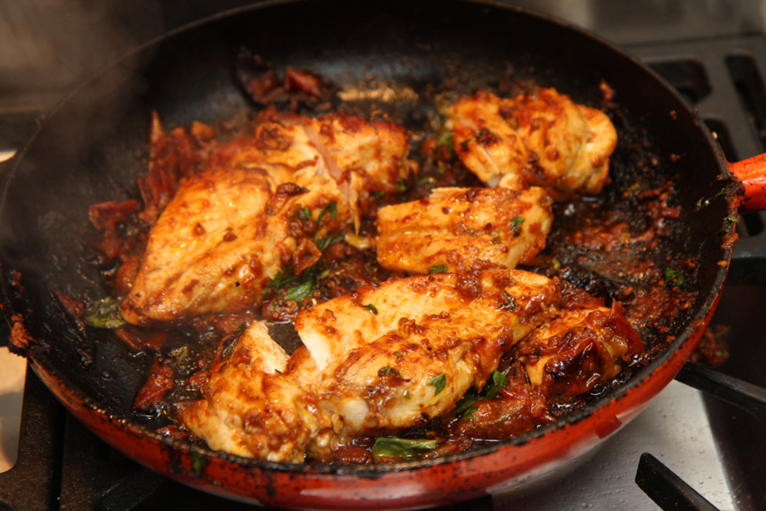

Garlic Chicken

Every now and then you come across one of those recipes that just leaves you speechless. Well, today I'm introducing you to one of those recipes. This Garlic Chicken is so delicious, so flavorful, and so easy to make for a quick weeknight meal! It starts with tender, pan-seared chicken breasts that are then covered with a creamy, garlic-infused sauce. The moment my family tried this recipe, they instantly loved it! It honestly took everyone's breath away.
Ingredients:
- 500 g (about 1 lb) of chicken breast or thighs, cut into pieces
- 5 garlic cloves
- 3 tablespoons olive oil
- 1/2 cup white wine (optional)
- Salt and pepper to taste
- Chopped parsley (optional)
How to make homemade Lasagna:
- Season the chicken with salt and pepper.
- In a large skillet, heat the olive oil and add the peeled, slightly crushed garlic cloves.
- Add the chicken and brown it on all sides.
- If using wine, pour it in and cook over medium heat until the alcohol evaporates (about 10-15 minutes).
- Cook until the chicken is fully done and golden brown.
- Serve with rice, potatoes, or crusty bread.